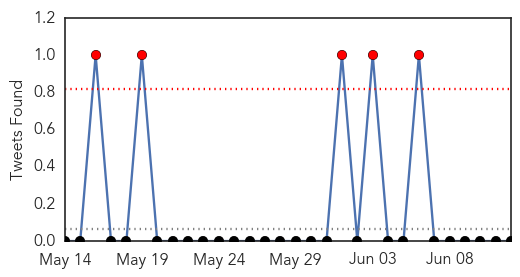
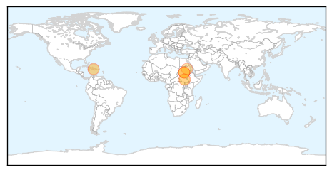

30 Day Trends
Web: 12 alerts, 8 warnings
Twitter: 5 alerts, 0 warnings
Top Articles:
- 0.998
- South Sudan: Treating a Cholera Outbreak in Juba
- 0.963
- After the Earthquake: Cholera in Haiti and How You Can Help
- 0.955
- UNICEF South Sudan Situation Report No. 26 Reporting Period 4 – 11 June 2014 - South Sudan
- 0.829
- South Sudanese Refugees in Ethiopia: Emergency requires special mobilization
- 0.826
- Emergency requires special mobilization
- 0.825
- South Sudanese Refugees in Ethiopia: Emergency situation requires special mobilization
- 0.641
- Disease fears in South Sudan
- 0.513
- AmeriCares and Project Medishare Provide Support to Haiti Hospital
Top Tweets:
-
No tweets found for Jun 12, 2014
Web/News Articles

Tweets
Article Locations
Article Confidences